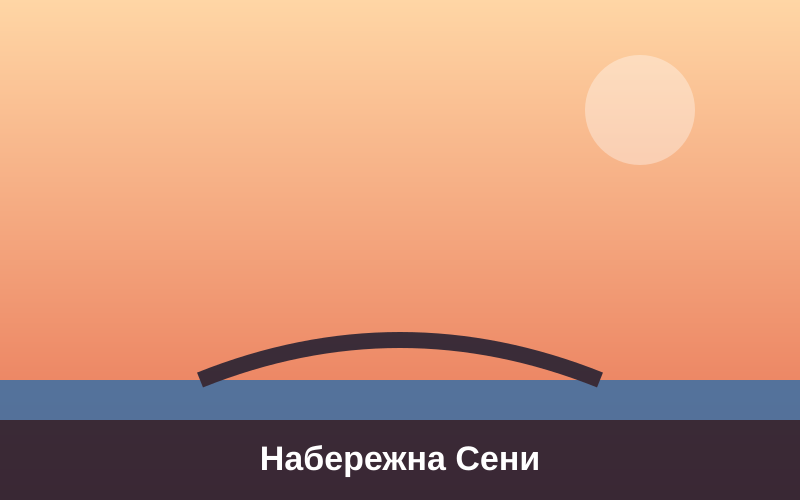

🏛️ Визначні пам’ятки
- Ейфелева вежа — краєвид з другого поверху вартий кожної сходинки.
- Лувр — «Мона Ліза» менша, ніж здається, а враження — більші.
- Монмартр і базиліка Сакре-Кер — найкращий захід сонця над містом.
- Собор Паризької Богоматері — велична готика, що відроджується.

🍽️ Кухня та гастрономія
Круасани 🥐, багети, макарони й сири — паризька кухня це ціла філософія. Ми щоранку купували свіжий багет у маленькій буланжері біля готелю, а ввечері пробували цибулевий суп у бістро з картатими скатертинами.

🎭 Культура та традиції
Парижани обожнюють неспішні розмови на терасах кафе, книжкові розвали на набережній Сени та музеї, які першої неділі місяця відкриті безкоштовно. Мистецтво тут — частина повсякдення.
Віртуальна прогулянка мапою
💭 Особисті історії
Одного вечора ми загубили карту й випадково вийшли до вуличного музиканта, який грав Едіт Піаф. Ми танцювали прямо на бруківці — і це був найщасливіший момент усієї поїздки. Париж навчив нас не поспішати й дозволяти місту вести нас самому.